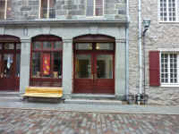
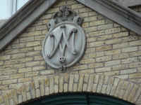
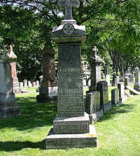
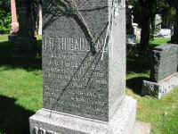
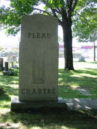

|
PHOTOS OF QUEBEC CITY, OCTOBER
2009
|
(
don't forget to click on the photos to see them
better) |
|

|

|
|
21 rue St-Pierre, in Old Quebec, just
south of Place Royale, is the only building that
has kept the same number and does not seem to have
undergone major changes. This is where Jean-Baptiste
Thibaudeau, Charles Consigny's maternal grandfather,
had his fruit-merchant business at the end of the
19th century.
As for his home, at 41 rue Ste-Hélène in the
St-Roch district, the E.N.A.P. now stands on
its site.
|
|

|
|
|

|
|
179 rue du Roi no longer exists.
It was the flat where Charles
Consigny's parents lived in the 1890s, before his father
Arsène died. Today there is an apartment
building there, 575 du Roi, built in the late
1970s. |
|
|
|

|

|
|
From the 1901 and 1911 censuses
we know that Charles Consigny's paternal grandmother,
Basilisse Landry, lived in a home for the
elderly, run by nuns, on rue
St-François. Here is a photo of the building that seems
the most likely; it is very close to St-Roch church.
Today it is an apartment building. |
|

|
|
SAINT-CHARLES
CEMETERY
(old section, rue Saint-Vallier) |
|
CONSIGNY MONUMENT |
|

|

|
|
At the Saint-Charles cemetery, Nicolas
Consigny, Charles Consigny's uncle, bought this plot in
1891 for his family. In the picture on the right, the Consigny
monument is in the centre. Only the names
of one of his daughters and her family are engraved on it. But we know that
Nicolas had his mother, Basilisse Landry, and his
two wives buried there, though not his father, who died before
the plot was bought. (perhaps it is not the original
headstone?...)
|
|
|
|
THIBAUDEAU MONUMENT |
|

|

Thibaudeau monument, left
Laliberté monument, centre
Paquet monument, right
|
|

|
|
At the Saint-Charles cemetery, Jean-Baptiste
Thibaudeau, a well-known merchant, bought a plot in 1889. It
lies near those of very well-known rue
St-Joseph merchants, Laliberté and Z. Paquet.
His daughter Amanda, Charles Consigny's mother,
is buried there. As for her husband, Arsène Consigny,
and their children who died young, including Charles's
twin, we do not know for now.
|
|
|
|
PLEAU MONUMENT |
|

|

|
|
At the Saint-Charles cemetery, Roland
Pleau, Charles Consigny's brother-in-law, bought this
plot with one of his sons-in-law, Laval Chartré. |
|

|
|